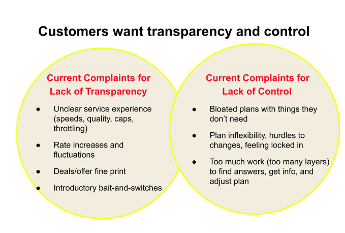
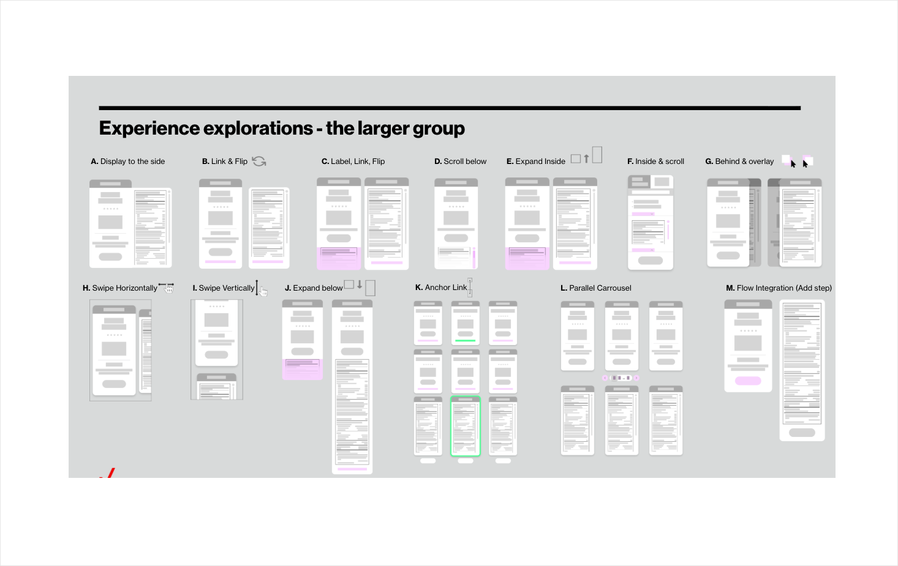
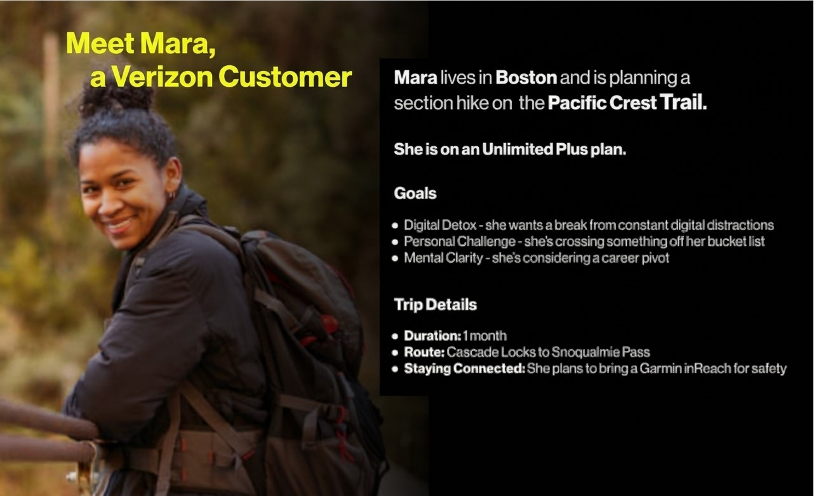

Research Concept
Early wireframe exploration for the mobile plans revamp.
A collection of wireframes and visual design explorations from various projects.

Early wireframe exploration for the mobile plans revamp.

Wireframe explorations for cross-channel label compliance.

Early service experience sketches for satellite connectivity.